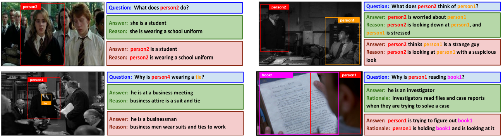
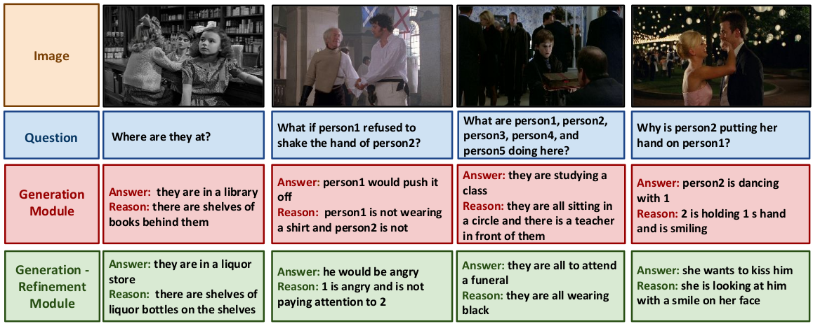
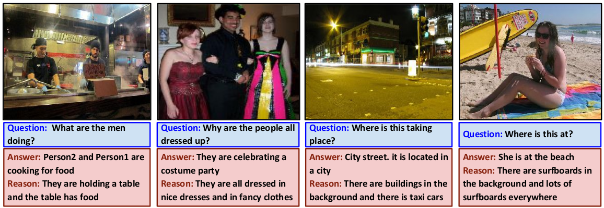
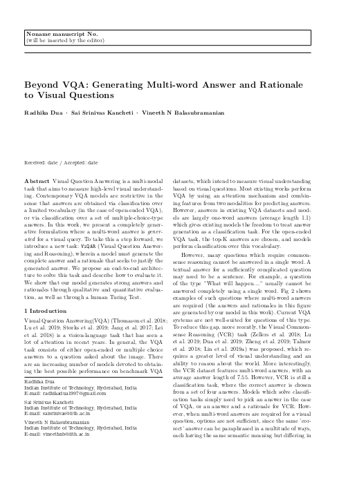

Visual Question Answering is a multi-modal task that aims to measure high-level visual understanding. Contemporary VQA models are restrictive in the sense that answers are obtained via classification over a limited vocabulary (in the case of open-ended VQA), or via classification over a set of multiple-choice-type answers. In this work, we present a completely generative formulation where a multi-word answer is generated for a visual query. To take this a step forward, we introduce a new task: ViQAR (Visual Question Answering and Reasoning), wherein a model must generate the complete answer and a rationale that seeks to justify the generated answer. We propose an end-to-end architecture to solve this task and describe how to evaluate it. We show that our model generates strong answers and rationales through qualitative and quantitative evaluation, as well as through a human Turing Test.
|
|
Given an image and a question about the image, we generate a natural language answer and reason that explains why the answer was generated.
|
Overview of the Architecture
We present an end-to-end, attention-based, encoder-decoder architecture for answer and rationale generation which is based on an iterative refinement proce-dure. The refinement in our architecture is motivated by the observation that answers and rationales can influence one another mutually. Thus, knowing the answer helps in generation of a rationale, which in turn can help in the generation of a more refined answer. The encoder part of the architecture generates the features from the image, question and caption. These features are used by the decoder to generate the answer and rationale for a question
Qualitative Results
Qualitative results for ViQAR task from our Generation Refinement architecture. Blue box = question about the image; Green = Ground truth; Red = Generated results from our proposed architecture. Note: Object regions shown on the image is for reader’s understanding and are not given as input to the model.

|
Qualitative results for our model with and without refinement module.

|
Qualitative results on Visual7W dataset.

|
Source Code
We will soon release our implementation in PyTorch on the github page.
Paper and Bibtex
|

|
|
Radhika Dua, Sai Srinivas Kancheti, Vineeth N Balasubramanian. Beyond VQA: Generating Multi-word Answer and Rationale to Visual Questions.
|
|
|
|
@inproceedings{huang2020smp,
Author = {Huang, Wenlong and
Mordatch, Igor and Pathak, Deepak},
Title = {One Policy to Control Them All:
Shared Modular Policies for Agent-Agnostic Control},
Booktitle = {ICML},
Year = {2020}
}
|
Acknowledgements
We are grateful to the Ministry of Human Resource Development, India; Department of Science and Technology, India; as well as Honeywell India for the financial support of this project through the UAY program. We also thank the Japan International Cooperation Agency and IIT-Hyderabad for the provision of GPU servers used for this work. We thank the anonymous reviewers for their valuable feedback, as well as all our lab members for all the insightful discussions at several stages of the project that improved the presentation of this work.
{kind=link}
{kind=link}
{kind=link}
{kind=link}
{kind=link}